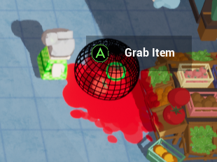
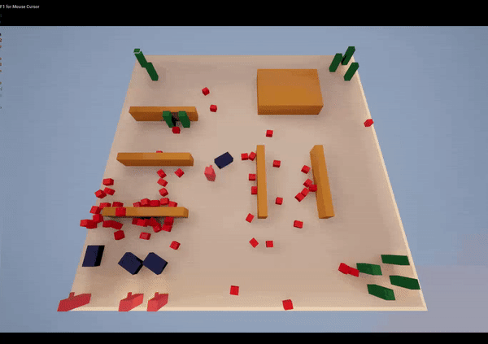
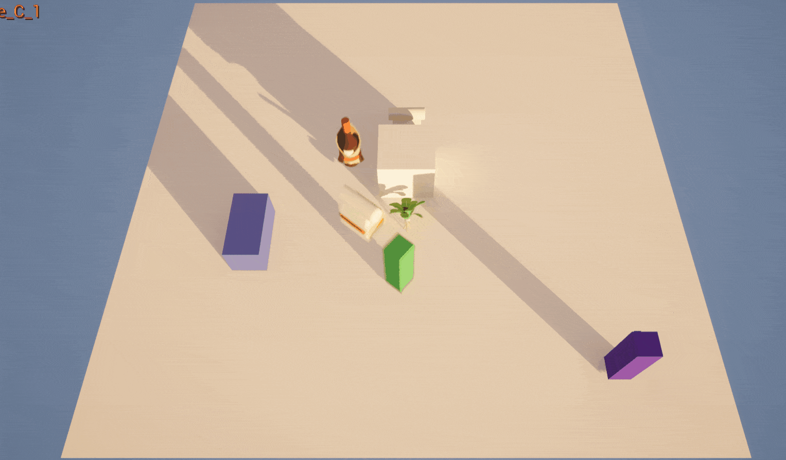
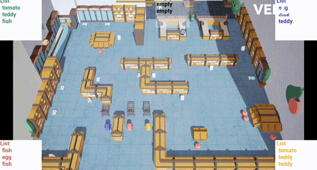
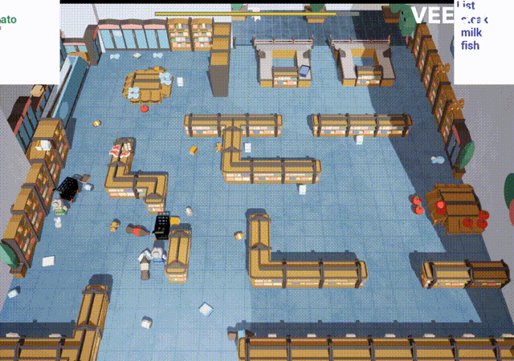
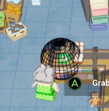
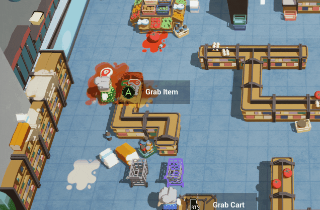
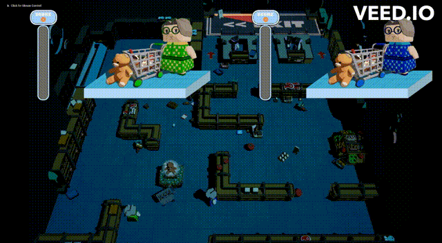

Grrrumble!
A quick overview of the programming side of the Grrrumble production process.
Focus: Making a full gameloop from start to finish.
Duration: three months.
The cart - physics


Time: a week
Cart physics:
We wanted everything in the game to feel throwable and a little bit wonky, with that playful kind of chaos where objects bounce, roll, and sometimes get in your way. The difficult part was figuring out how these objects should interact once they all had their own physics.
At first, the shopping cart was just a component of the grandma character. That worked fine for basic movement, but it meant the cart could not have its own physics since it was tied directly to her. We needed the cart to behave more like a real one, slightly unpredictable and harder to control, to make the gameplay more interesting.
After some testing, we discovered that child components in Unreal Engine 5 cannot simulate physics independently. This meant we had to make a choice: keep everything inside one actor and lose realistic physics, or split the grandma and the cart into two separate character blueprints. We chose the second option because the cart’s physics are an important part of the experience.
Now, when the grandma grabs the cart, a physics constraint connects the two. It acts like a joint that lets the cart move and wobble naturally while still staying attached to her. Behind the scenes, we enable and disable physics at specific moments, handing control between the two actors when needed. It took a lot of experimentation, but the result feels natural and just chaotic enough to be fun.
void AShoppingCart::ThrowOutItems()
{
float heightOffset{ 100.f };
float raduis{ 100.f };
FVector center{ m_pMesh->GetComponentLocation().X,
m_pMesh->GetComponentLocation().Y,
m_pMesh->GetComponentLocation().Z + heightOffset };
float angle{ 360.0 / m_Inventory->GetInventorySize() };
// thrown items in a circle
for (int i = 0; i < m_Inventory->GetInventorySize(); i++)
{
AItem* pItem = m_Inventory->RemoveSelectedItem();
if (pItem)
{
float itemAngle{ angle * static_cast(i) };
FVector spawn{
raduis * static_cast(UKismetMathLibrary::Cos(FMath::DegreesToRadians(itemAngle))) + center.X,
raduis * static_cast(UKismetMathLibrary::Sin(FMath::DegreesToRadians(itemAngle))) + center.Y,
center.Z };
pItem->SetActorLocation(spawn,false,0,ETeleportType::ResetPhysics);
pItem->SetActorScale3D(FVector{1.f,1.f,1.f});
pItem->SetActorEnableCollision(true);
// Enable Physics
TArray comps;
pItem->GetComponents(comps);
if(comps.Num() > 0)
comps[0]->SetSimulatePhysics(true);
SetActorEnableCollision(true);
}
}
}
Grandma - Player feedback

Time: a week
Player feedback:
This game features a large number of physics-driven items scattered throughout the level, all of which can be interacted with. To keep the experience accessible and family-friendly, we have to ensure that, even with so many dynamic objects, the interaction system remains readable instead of confusing.
Our first implementation used a straightforward ray trace. The ray originated at the grandma’s position and extended forward along her facing direction. Whatever object the ray hit first was considered the active interactable. In practice, this turned out to be extremely sensitive to player movement. Because players can rotate and move quickly. Even small shifts in angle would cause the selection to flicker between objects. We first tried slowing down movement, but the gameplay feel was not right.
To address this, we replaced the ray trace with a sphere trace. Although this approach is slightly more expensive computationally, the trade-off is well worth it. A sphere trace creates a volumetric query rather than a single line, allowing us to collect all nearby hits and deterministically select the object closest to the center of the trace. This makes the system far more stable, especially when multiple items overlap or when the player is moving rapidly.
{
`void AGranma::OutlineItems()
{
if (!m_IsAllowedToMove) return;
// If we’re holding the cart, clear any outline and bail.
if (m_pCart && m_pCart->m_IsBeingHeld) { ClearOutline(); return; }
const FVector dir = GetActorRotation().Vector();
const FVector start = (GetActorLocation() - FVector(0,0,m_OffsetZAxis)) + dir * m_StartScale;
const FVector end = start + dir * m_EndScale;
const float r = m_EndScale * FMath::Tan(FMath::DegreesToRadians(m_TraceAngle));
const FCollisionShape shape = FCollisionShape::MakeSphere(r);
// Channel 3 = outlineable things
TArray hits;
if (!GetWorld()->SweepMultiByChannel(hits, start, end, FQuat::Identity, ECC_GameTraceChannel3, shape))
{ClearOutline();
return;}
// Pick closest valid hit
const FHitResult* best = nullptr;
float bestDistSq = TNumericLimits::Max();
for (const FHitResult& h : hits) {
if (h.GetActor() == this) continue;
const float d2 = FVector::DistSquared(start, h.Location);
if (d2 < bestDistSq) { bestDistSq=d2; best=&h; } }
ClearOutline();
if (!best) return; // Apply per-player
outline m_pOutlinedItemRef=best->GetComponent();
if (m_pOutlinedItemRef)
{m_pOutlinedItemRef->SetRenderCustomDepth(true);
m_pOutlinedItemRef->SetCustomDepthStencilValue(m_PlayerIdx + 1);}
// Context-specific tooltip
AActor* target = best->GetActor();
if (target->IsA(AGranma::StaticClass()))
{auto other = Cast(target);
if (m_IsAllowToAttack && other && other->m_CanGetHurt) SetToolTip(m_pImageBButton, "Hit");
else ClearOutline();}
else if (target->IsA(AShoppingCart::StaticClass()))
{
auto cart = Cast(target);
if (m_pItemHeld)
{
if (cart->GetIsToppled()) SetToolTip(m_pImageTriggers, "Pick Up");
else if (cart->m_Inventory->GetAmountItemsInInventory() == 6) SetToolTip(m_pImageFull, "Full");
else SetToolTip(m_pImageAButton, "Place");
}
else
{
if (cart->GetIsToppled()) SetToolTip(m_pImageTriggers, "Pick Up");
else if (cart->m_Inventory->GetAmountItemsInInventory() == 6) SetToolTip(m_pImageAButton, "Take");
else SetToolTip(m_pImageTriggers, "Grab");
}
}
else { SetToolTip(m_pImageAButton, m_pItemHeld ? "Swap" : "Grab");}
}
void AGranma::ClearOutline()
{
if (m_pOutlinedItemRef)
{
m_pOutlinedItemRef->SetRenderCustomDepth(false);
m_pOutlinedItemRef = nullptr;
if (m_pToolTip) m_pToolTip->SetVisibility(ESlateVisibility::Hidden);
}
}`
}
Progress Gallery






